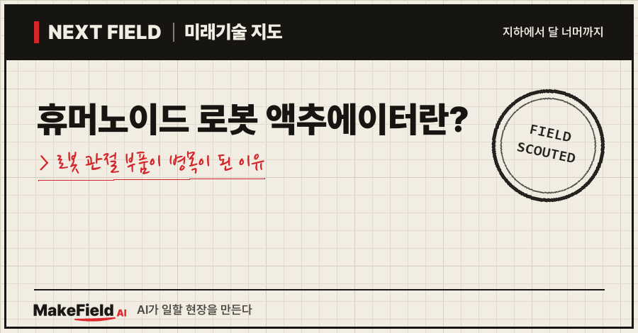
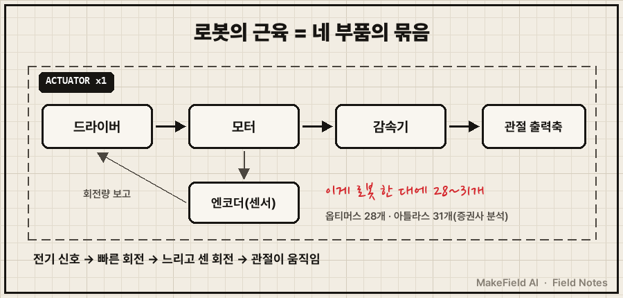
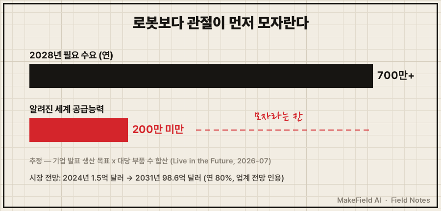
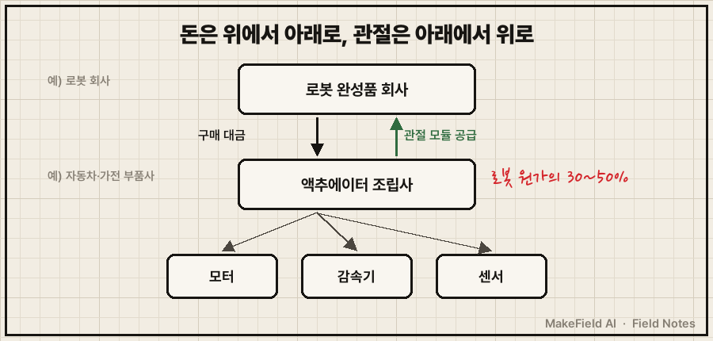

한 줄 요약: 휴머노이드 로봇 액추에이터는 로봇 관절을 움직이는 '근육' 부품으로, 로봇 한 대 제조원가의 30~50%를 차지하고(Interact Analysis, 코리아중앙데일리 2026-02 인용) 테슬라 옵티머스 한 대에만 28개가 들어갑니다. 로봇을 대량으로 만들겠다는 계획은 쏟아지는데, 이 관절 부품을 그만큼 찍어 낼 공장이 아직 모자라다는 게 2026년 로봇 산업의 핵심 병목이에요.
휴머노이드 로봇 뉴스는 보통 "얼마나 사람처럼 걷나"에 쏠려 있어요. 그런데 돈과 공장의 관점에서 보면 질문이 바뀝니다. "관절 부품을 누가, 몇 개나, 얼마에 만드나." 2026년 10월 기준으로 이 질문을 쉬운 말로 풀어 볼게요.
1. 휴머노이드 액추에이터란 무엇인가요
휴머노이드 액추에이터란 전기 신호를 받아 로봇 관절을 실제로 돌리고 밀어 주는 구동 부품 묶음이다. 사람으로 치면 뼈와 뼈를 잇는 관절에 붙은 근육이에요. 로봇 팔꿈치 하나를 굽히는 데도 액추에이터가 하나 필요합니다.
💡 액추에이터 — 전기를 받아 '움직임'으로 바꾸는 부품. 로봇의 근육이다.
하나의 액추에이터 안에는 보통 네 가지가 같이 들어가요.
| 구성 부품 | 하는 일 | 사람 몸에 비유하면 |
|---|---|---|
| 모터 | 전기로 축을 빠르게 돌린다 | 근육 섬유 |
| 감속기 | 빠른 회전을 느리지만 센 힘으로 바꾼다 | 힘줄·지렛대 |
| 엔코더(센서) | 얼마나 돌았는지 잰다 | 관절 감각 |
| 드라이버 | 모터에 전기를 얼마나 줄지 정한다 | 운동 신경 |
💡 감속기 — 기어를 여러 단 맞물려 '빠르고 약한 회전'을 '느리고 센 회전'으로 바꾸는 장치. 자전거 기어를 낮추면 페달이 가벼워지는 원리와 같다.
💡 엔코더 — 모터가 몇 도 돌았는지 재는 센서. 이게 없으면 로봇은 자기 팔이 어디 있는지 모른다.

몇 개가 들어갈까요? 테슬라 옵티머스(2022년 공개형)에는 28개가 들어가고, 일론 머스크는 다음 세대가 50개 넘게 쓸 수 있다고 말했어요(코리아중앙데일리 2026-02). 보스턴다이내믹스의 아틀라스 한 대에는 몸체 액추에이터 31개가 들어간다는 증권사 분석이 있습니다(파이낸셜뉴스 2026-09, LS증권 인용). 관절이 많을수록 움직임이 자연스러워지는데, 아틀라스는 56자유도로 소개됐어요(Repairer Driven News 2026-01).
💡 자유도(DoF) — 로봇이 독립적으로 움직일 수 있는 방향의 개수. 손목이 위아래·좌우·비틀기로 움직이면 3자유도다.
2. 왜 지금 휴머노이드 액추에이터가 병목이 됐나요
로봇 완성품 회사들의 양산 목표를 더하면 필요한 관절 부품 수가 지금 세계 생산능력을 크게 넘기 때문이다. 로봇 한 대에 수십 개가 들어가니, 로봇 생산 목표가 조금만 커져도 부품 수요는 몇십 배로 뛰어요.
- 수요 대 공급: 미국 분석 매체 Live in the Future는 2028년까지 정밀 액추에이터 수요가 연 700만 개 이상인데, 알려진 세계 공급능력은 200만 개 미만이라고 봤어요(Live in the Future 2026-07). 다만 이 수요치는 기업들이 발표한 생산 목표에 대당 부품 수를 곱해 더한 추정이고, 공개된 단일 통계가 아닙니다.
- 시장 규모 전망: 업계에서는 휴머노이드용 액추에이터 수요가 2024년 1억 5,000만 달러에서 2031년 98억 6,000만 달러로, 연평균 80%씩 늘 것으로 본다고 보도됐어요(코리아중앙데일리 2026-02, 업계 전망 인용 — 추정).
- 원가에서 차지하는 몫: 영국 조사기관 Interact Analysis는 액추에이터가 휴머노이드 재료비의 30~50%라고 봤고(코리아중앙데일리 2026-02), 국내 보도에서는 40~60%(더인베스터 2026-03), 60~70%(한국경제 2026-09)까지 나와요. 기준(재료비냐 전체 제조원가냐)이 달라 숫자가 갈리지만, 로봇 원가에서 가장 비싼 부품이라는 데는 이견이 없습니다.
💡 연평균 성장률(CAGR) — 매년 평균 몇 %씩 커지는지 나타낸 값.

3. 돈의 흐름 — 누가 사고, 누가 파나요
사는 쪽은 로봇 완성품 회사이고, 파는 쪽은 액추에이터 조립사와 그 밑의 모터·감속기·센서 회사다. 자동차로 치면 완성차 회사와 부품 회사(1차·2차 협력사) 구조가 로봇에서도 똑같이 생기고 있어요.
| 단계 | 누가(예시) | 무엇을 하나 |
|---|---|---|
| 사는 쪽(로봇 완성품) | 테슬라, 보스턴다이내믹스, LG전자(가정용 로봇) | 액추에이터를 사서 로봇을 조립 |
| 파는 쪽(액추에이터) | 현대모비스, LG전자 '악시움' | 모터·감속기·센서를 묶어 관절 모듈로 공급 |
| 그 아래(부품) | 소형 모터·감속기·센서 업체(삼성전기가 투자한 노르웨이 모터사 Alva Industries 등) | 액추에이터 속 핵심 부품 공급 |
규모는 숫자로 보면 감이 옵니다.
- 로봇 한 대의 관절 값: LS증권은 액추에이터 양산 단가를 개당 800~1,100달러로 가정하면, 아틀라스 한 대당 현대모비스 매출이 약 3,500만~5,000만 원이 된다고 추산했어요. 5,000대를 만들면 1,736억~2,387억 원입니다(파이낸셜뉴스 2026-09, 증권사 추정).
- 목표 물량: 보스턴다이내믹스는 2028년까지 연 3만 대 로봇 생산을 목표로 하고, 미국 조지아 공장부터 투입한다고 밝혔어요(Repairer Driven News 2026-01). 단순 계산하면 3만 대 × 31개 = 연 약 93만 개의 액추에이터가 됩니다(추정 — 단순 곱이며 실제 계획과 다를 수 있음).
💡 1차 협력사 — 완성품 회사에 직접 부품 모듈을 공급하는 회사. 그 아래에 세부 부품을 대는 2차·3차 협력사가 있다.

※ 위 기업명과 증권사 추정치는 산업 구조를 설명하기 위한 예시입니다. 특정 종목의 매수·매도를 권하는 글이 아닙니다.
4. 누가 만들고 있나요 — 한국 기업 현황
한국에서는 현대모비스가 아틀라스용 액추에이터를 전량 수주했고, LG전자는 자체 브랜드 '악시움'으로 창원에서 초도 양산에 들어갔다.
| 기업 | 현황 | 출처 |
|---|---|---|
| 현대모비스 | 보스턴다이내믹스 아틀라스 액추에이터 전량 수주, 2027년부터 로봇 부품 매출 가능성 | 파이낸셜뉴스 2026-09(LS증권 인용) |
| LG전자 | 액추에이터 '악시움(AXIUM)'을 2026년 6월부터 경남 창원 스마트파크에서 생산, 연내 대규모 양산 체제 구축 계획 | 뉴시스 2026-07 |
| LG전자 | 규격별 9종 제품군, "복수의 빅테크와 논의 중", 경쟁사보다 무게 30% 이상 가볍다고 주장 | 한국경제 2026-09 |
| 삼성전기 | 노르웨이 초소형 모터사 Alva Industries에 투자, 양산 일정은 미공개 | Live in the Future 2026-07 |
LG전자 사업본부장은 독일 IFA 2026 간담회에서 "로봇 제조사, 물류 기업 등을 비롯한 복수의 빅테크와 논의 중"이라고 말했어요(한국경제 2026-09). 가전 모터를 대량으로 만들던 공장 경험이 로봇 관절로 옮겨 가는 그림입니다. LG전자는 가전용 모터를 연 4,500만 개 만든다는 점을 양산 기반으로 내세웠어요(더인베스터 2026-03).
5. 언제 오나요, 그리고 한계
양산은 2026~2028년에 시작되지만, 국산화율과 실제 로봇 수요라는 두 가지 벽이 남아 있다. 낙관만 할 수 없는 근거도 같이 봐야 해요.
- 아직 외산 의존: 한국 로봇 소재·부품 국산화율은 40%대에 머물고, CES 2026에 나온 아틀라스와 LG 클로이드 시제품도 외산 액추에이터를 썼어요(코리아중앙데일리 2026-02, 한국무역협회 인용).
- 수요치는 '목표의 합': 700만 개 수요는 기업들이 발표한 생산 목표를 더한 추정이에요(Live in the Future 2026-07). 로봇이 목표만큼 안 팔리면 병목도 그만큼 줄어듭니다.
- 원가 숫자가 제각각: 액추에이터 비중이 30~70%로 출처마다 달라요. 로봇 회사들이 부품 명세를 공개하지 않기 때문에 외부 추정에 기댈 수밖에 없다는 한계가 있습니다(Live in the Future 2026-07).
- 단가 하락 압력: 개당 800~1,100달러라는 가정은 증권사 추정이에요(파이낸셜뉴스 2026-09). 대량 생산이 시작되면 단가는 내려가고, 부품 회사 매출은 물량과 단가의 줄다리기가 됩니다(추정).
정리하면, '시제품(2026 CES) → 초도 양산(2026 하반기) → 대량 생산(2028 목표)' 순서에서 지금은 두 번째 단계에 들어선 참이에요. 2027년 부품 매출 발생 여부와 2028년 연 3만 대 목표 달성 여부가 다음 확인 지점입니다.
자주 묻는 질문
Q. 액추에이터는 산업용 로봇 팔에도 쓰이는 거 아닌가요?
맞아요. 공장 로봇 팔도 관절마다 모터·감속기를 씁니다. 휴머노이드는 관절 수가 훨씬 많고, 사람 몸 크기 안에 넣어야 해서 더 작고 가벼워야 한다는 점이 달라요. LG전자가 "무게 30% 이상 감소"를 강점으로 내세운 이유입니다(한국경제 2026-09).
Q. 왜 로봇 회사가 직접 만들지 않고 부품 회사에 맡기나요?
수십만 개 단위로 같은 부품을 정밀하게 찍어 내는 일은 자동차·가전 부품 회사가 이미 해 온 일이에요. 한국에서 먼저 나선 현대모비스(자동차 부품)와 LG전자(가전 모터, 연 4,500만 개 양산 — 더인베스터 2026-03)도 모두 대량 양산 경험을 가진 회사라는 공통점이 있어요. 다만 어떤 로봇 회사가 관절을 직접 만들고 어떤 회사가 외부에서 사는지는 공개 자료가 적어, 이 글에서 확인한 범위는 위 두 사례까지예요.
Q. 한국에서 휴머노이드 부품 시장은 언제 커지나요?
증권사 분석으로는 2027년부터 로봇 부품 매출이 생길 가능성이 있고(파이낸셜뉴스 2026-09), 보스턴다이내믹스의 연 3만 대 목표 시점은 2028년이에요(Repairer Driven News 2026-01). 실제 규모는 그때 확인해야 합니다.
오늘의 용어 정리
- 액추에이터 — 전기를 움직임으로 바꾸는 로봇 관절 부품('근육')
- 감속기 — 빠르고 약한 회전을 느리고 센 회전으로 바꾸는 기어 장치
- 엔코더 — 모터 회전량을 재는 센서
- 드라이버 — 모터에 전기를 얼마나 줄지 정하는 장치
- 자유도(DoF) — 로봇이 독립적으로 움직이는 방향의 수
- CAGR — 연평균 성장률
- 1차 협력사 — 완성품 회사에 직접 모듈을 공급하는 회사
- 국산화율 — 부품 중 국내에서 만든 것의 비율
지난 Next Field에서는 전기트럭을 채우는 메가와트 충전을 다뤘는데, 이번엔 '부품 하나가 산업 전체의 속도를 정하는' 이야기였어요. 데이터센터의 변압기처럼, 휴머노이드에선 관절이 그 자리에 있습니다. 여러분은 휴머노이드 대량 보급의 진짜 병목이 관절 부품일까요, 로봇을 똑똑하게 만드는 AI일까요?
출처
[1] 코리아중앙데일리(2026-02) — 액추에이터 원가 비중 30~50%(Interact Analysis), 옵티머스 28개·차기 50개 이상, 수요 1억 5,000만→98억 6,000만 달러(2024→2031), 국산화율 40%대, CES 2026 시제품 외산 액추에이터
→ https://www.koreajoongangdaily.com/business/actuators-become-new-battleground-in-humanoid-robot-race/12288658
[2] 파이낸셜뉴스(2026-09) — LS증권 분석: 현대모비스 아틀라스 액추에이터 전량 수주, 대당 31개, 개당 800~1,100달러 가정 시 대당 3,500만~5,000만 원, 5,000대 1,736억~2,387억 원, 2027년 부품 매출 가능성
→ https://www.fnnews.com/news/202609020840218266
[3] Repairer Driven News(2026-01) — 보스턴다이내믹스 2028년 연 3만 대 생산 목표, 조지아 공장 투입, 아틀라스 56자유도
→ https://www.repairerdrivennews.com/2026/01/07/hyundai-showcases-humanoid-at-ces-plans-30000-units-by-2028/
[4] 뉴시스(2026-07) — LG전자 악시움 창원 스마트파크 생산(6월부터), 연내 대규모 양산 체제 구축 계획
→ https://mobile.newsis.com/view/NISX20260728_0003725911
[5] 한국경제(2026-09) — LG전자 IFA 2026 간담회: 빅테크 공급 논의, 원가 비중 60~70%, 9종 제품군, 무게 30% 이상 감소
→ https://www.hankyung.com/article/2026090668691
[6] 더인베스터(2026-03) — 액추에이터 원가 비중 40~60%, LG전자 가전 모터 연 4,500만 개 양산 기반
→ https://m.theinvestor.co.kr/article/10701643
[7] Live in the Future(2026-07) — 2028년 정밀 액추에이터 수요 연 700만 개 이상 대 공급 200만 개 미만(기업 목표 합산 추정), 삼성전기의 Alva Industries 투자
→ https://liveinthefuture.org/stories/actuator-bottleneck-humanoid-robot-supply-gap